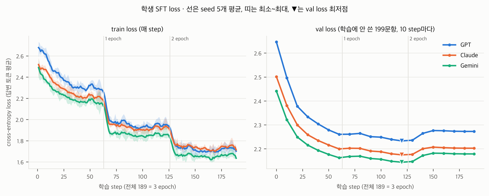
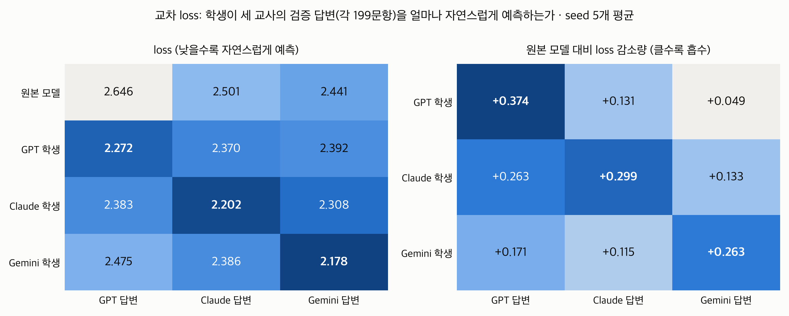

학생 모델(Qwen3-0.6B-Base) SFT 가이드와 결과
GPT·Claude·Gemini 교사 답변 각 1,000개로 Qwen3-0.6B-Base를 미세조정(SFT)해 학생을 만들었다. 교사 3개 × seed 5개 = 학생 15명을 같은 조건으로 학습했고, 15명 모두 자기 교사의 답변을 가장 잘 예측하게 되었다(교차 loss 15/15). 이 문서는 SFT 코드를 짜는 원리, 실제로 쓴 설정과 절차, 학습 결과, 학생 응답 생성 과정을 정리한다.
1. 전체 흐름
이 문서는 ②~④를 다룬다. 세 교사의 학생은 교사 답변만 다르고 나머지는 모두 같게 학습했고, 같은 교사 안에서는 seed(학습 무작위성)만 바꿔 5번 반복했다.
2. 학습 데이터: 1,000개 학습 + 199개 검증 (sft/build_data.py)
- 교사 생성 결과(각 1,200개)를 id로 합친다.
- 한 교사라도 답이 없으면(null) 그 질문을 세 교사 모두에서 뺀다 → Claude가 거절한 id 9341 1개.
- 학습 형식 전체(시스템 프롬프트 + 질문 + 답 +
<|im_end|>)를 Qwen3 토크나이저로 세어, 한 교사라도 1,024토큰을 넘으면 뺀다 → 0개(가장 긴 예제 945토큰). - 남은 1,199개에서 seed 42로 정확히 1,000개를 뽑아 세 교사 모두 같은 id로 학습 파일을 만든다.
- 뽑히지 않은 199개는 검증 세트로 저장한다. 학습 중 val loss와 교차 loss에 쓴다.
| 교사 | 학습 예제 | 검증 예제 | 학습 답변 토큰 합 | 예제 전체 토큰 (중앙 / 최대) |
|---|---|---|---|---|
| GPT | 1,000 | 199 | 264,911 | 518 / 892 |
| Claude | 1,000 | 199 | 407,853 | 658 / 945 |
| Gemini | 1,000 | 199 | 335,618 | 587 / 900 |
train.py)도 1,024를 넘는 예제가 들어오면 자르지 않고 오류로 멈추게 해, 조용히 잘리거나 빠져 1,000개가 아니게 되는 일이 없도록 했다. 잘린 답으로 학습하면 학생이 문장 중간에 끝나는 답을 배우고, 교사마다 잘리는 비율이 다르면 그 차이가 누출 효과와 섞이기 때문이다.교사별 답변 토큰 수는 Claude가 GPT의 약 1.5배다. 같은 1,000문항이지만 Claude 학생은 학습 대상 토큰을 더 많이 본다. 이것은 교사 스타일 자체의 일부라 맞추지 않았고, 평가 단계에서 응답 길이를 공변량으로 넣어 다룬다.
3. 데이터를 하나의 문자열로 만들기
LLM은 결국 긴 텍스트 한 줄을 본다. (질문, 답) 쌍을 Qwen이 아는 ChatML 형식 하나로 이어 붙인다.
<|im_start|>system
{시스템 프롬프트: 교사 생성 때와 같은 문장}<|im_end|>
<|im_start|>user
{질문}<|im_end|>
<|im_start|>assistant
{교사 답변}<|im_end|>- 학습과 추론의 형식이 같다. 형식을
inference/prompt.py의build_prompt()하나로 만들어 학습(train.py), 응답 생성(gen_student.py), 교차 loss(cross_loss.py)가 모두 이 함수를 쓴다. - 시스템 프롬프트도 교사 생성 때와 같다. 학생은 교사와 같은 지시를 받은 상태에서 교사의 답을 따라 하도록 배운다.
- 끝의
<|im_end|>까지 학습한다. 그래야 "여기서 답을 끝낸다"를 배운다.
4. 학습 원리: 다음 토큰 맞히기와 -100 가리기
언어모델은 각 위치에서 다음 토큰을 예측하고, 실제 토큰과의 교차 엔트로피를 손실로 쓴다. 핵심 요령은 labels에서 시스템 프롬프트와 질문 부분을 -100으로 바꾸는 것이다. -100인 위치는 손실에서 빠진다.
가리지 않으면 모든 예제에 똑같이 들어가는 시스템 프롬프트가 손실을 지배하고, 교사 간 차이인 답변 부분의 학습 신호가 약해진다. 이 실험은 교사마다 다른 답변 스타일만 학생에게 옮겨야 하므로 특히 중요하다.
# sft/train.py
def tokenize(example, tok):
prompt_ids = tok(build_prompt(example["instruction"]), add_special_tokens=False)["input_ids"]
answer_ids = tok(example["output"] + END_TOKEN, add_special_tokens=False)["input_ids"]
input_ids = prompt_ids + answer_ids
if len(input_ids) > MAX_LEN:
raise ValueError(...) # 자르지 않고 멈춘다
return {"input_ids": input_ids, "labels": [-100] * len(prompt_ids) + answer_ids}5. 배치와 패딩
- 여러 예제를 한 번에 넣으려고 짧은 예제 뒤에 패딩 토큰(
<|endoftext|>)을 채운다. 패딩 위치는attention_mask = 0으로 무시하고,labels = -100으로 손실에서도 뺀다. - 배치 안에서 가장 긴 예제에 맞춰 패딩한다(dynamic padding).
- 응답 생성 때는 반대로 왼쪽을 패딩한다. 그래야 모든 질문의 답이 프롬프트 바로 뒤에서 시작된다.
6. 메모리와 정밀도
| 항목 | 파라미터당 | 0.6B 모델 |
|---|---|---|
| 가중치 원본 (fp32) | 4바이트 | 2.4GB |
| 기울기 | 4바이트 | 2.4GB |
| AdamW 상태 (1차·2차 모멘트) | 8바이트 | 4.8GB |
| 합계 | 16바이트 | 약 10GB + 중간 계산값 |
- bf16 혼합정밀도: A100에서 계산은 bf16으로 빠르게 하고 가중치 원본은 fp32로 유지한다.
- gradient checkpointing: 순전파 중간값을 저장하지 않고 역전파 때 다시 계산해 메모리를 아낀다(약 20% 느려짐).
- 최종 모델 저장: 학습이 끝난 가중치를 bf16으로 저장해 용량을 절반(학생당 약 1.2GB)으로 줄였다. 추론에는 bf16이면 충분하다.
7. 최적화 설정(하이퍼파라미터)
아래 값은 15명 모두 같다. 실제로 쓴 값이 sft/runs/{teacher}_seed{n}/run_info.json에 기록되어 있고, 15개 파일의 하이퍼파라미터가 한 종류임을 확인했다.
| 설정 | 값 | 이유 |
|---|---|---|
| 시작 모델 | Qwen/Qwen3-0.6B-Base | 대화 스타일이 없는 Base 모델이라 학생의 스타일이 교사에게서 왔다고 말할 수 있다. |
| 학습 방식 | Full fine-tuning | 0.6B는 전체 학습이 가능하고, 교사 스타일을 충분히 흡수해야 한다. |
| 옵티마이저 | AdamW (fused) | Transformer 미세조정의 표준. |
| 학습률 | 1e-5 | 작은 모델 전체 미세조정에서 흔한 범위(1e-5~2e-5). 너무 크면 사전학습 능력이 망가진다. |
| 스케줄 | cosine, warmup 5% | 처음 약 10 step 동안 0에서 1e-5까지 올린 뒤 cosine으로 0까지 줄인다. |
| 배치 | 8 × gradient accumulation 2 = 실효 16 | 8개씩 두 번 계산한 기울기를 모아 한 번 업데이트한다. |
| epoch / step | 3 epoch / 189 step | 1,000 ÷ 16 ≈ 63 step/epoch. 마지막 배치는 8개(1,000의 나머지). |
| gradient clipping | 1.0 | 기울기 크기가 1을 넘으면 줄여 튀는 업데이트를 막는다. |
| weight decay | 0 | 데이터가 1,000개로 적고 epoch도 짧다. |
| 최대 길이 | 1,024토큰 | 넘는 예제는 데이터 단계에서 제외(실제 0개). |
| 정밀도 | bf16 혼합정밀도 | A100 지원. |
| gradient checkpointing | 켬 | 메모리 절약. |
| val loss 측정 | 학습 전(step 0) + 10 step마다 + 마지막 | 검증 199개. 과적합 여부를 본다(모델 선택에는 쓰지 않음). |
| 최종 모델 | 마지막 step(189)의 모델 | 학생마다 val로 다른 시점을 고르면 교사별 조건이 달라지므로, 15명 모두 같은 시점을 쓴다. |
| seed | 42, 43, 44, 45, 46 | 데이터 순서와 dropout 등 학습 무작위성만 바꿔 반복 측정한다. |
8. Full fine-tuning과 LoRA
| Full fine-tuning (이 프로젝트) | LoRA | |
|---|---|---|
| 학습하는 가중치 | 전부 (0.6B) | 추가한 작은 행렬만 (보통 1% 미만) |
| 메모리 | 많음 (약 10GB) | 적음 |
| 스타일 흡수 | 강함 | 상대적으로 약함 |
| 주로 쓰는 경우 | 작은 모델, 행동을 확실히 바꿀 때 | 7B 이상 큰 모델, 자원이 부족할 때 |
9. 실험 통제: seed 5개와 동일 조건 검증
같은 데이터·설정이라도 seed에 따라 학생이 조금씩 다르게 학습된다. seed가 하나뿐이면 "누출 때문인지 그 학생이 우연히 잘 학습됐기 때문인지"를 구분할 수 없으므로, 교사마다 seed 5개로 반복했다. 평가 단계에서는 학생 run(seed)을 혼합효과모형의 랜덤효과로 넣는다.
학습이 끝난 뒤 15개 run_info.json으로 조건이 정말 같았는지 확인했다.
| 같게 맞춘 것 | 확인 결과 |
|---|---|
| 학습 질문 1,000개 | 15명 모두 id 해시 1종류, Mac 원본 파일과 해시 일치 ✅ |
| 검증 질문 199개 | 15명 모두 id 해시 1종류 ✅ |
| 교사별 학습 파일 | 교사마다 5개 seed의 파일 해시·답변 토큰 수 동일 ✅ |
| 하이퍼파라미터 | 15명 모두 1종류 ✅ |
| 프롬프트 형식, 시스템 프롬프트 | 15명 모두 동일 ✅ |
| 환경 | 15명 모두 NVIDIA A100-SXM4-40GB, torch 2.11, transformers 5.17 ✅ |
| epoch / step / 기록 | 15명 모두 3 / 189, train loss 189줄, val loss 21줄 ✅ |
| 다른 것 | 교사 답변(3종)과 seed(5종)만 |
seed가 실제로 다른 학생을 만들었는지도 확인했다. 같은 교사의 seed 42와 43 학생은 평가 질문 400개 중 똑같은 답이 0개였고, 최종 val loss도 seed마다 0.001~0.003 범위에서 달랐다.
10. 실행 환경과 절차 (Colab A100)
- Mac:
sft/build_data.py로 학습·검증 데이터를 만들고, 코드와 데이터를 zip으로 묶어 Google Drive에 올린다(API 키 제외). - Colab: A100 런타임에서 Drive의 코드를 실행한다. 패키지는 Mac과 같은 버전으로 고정한다(
requirements-colab.txt). Colab 실행용 노트북과 묶음 스크립트는 실행을 마친 뒤 정리하며 삭제했다. - 학생마다 ① 학습(
train.py) → ② 평가 질문 400개 응답 생성(gen_student.py) → ③ 교차 loss(cross_loss.py)를 연달아 끝내고 결과를 Drive에 저장한다. 세션이 끊겨도 끝난 학생은 보존되고 이어서 진행한다. - Mac: 결과만 묶은 zip(학습 기록, 응답 JSON, 교차 loss)을 내려받아 점검한다. 학생 모델 가중치(각 1.2GB)는 가져오지 않는다.
| 교사 | 학습 시간 (seed 평균) | step당 |
|---|---|---|
| GPT | 4.0분 | 약 1.0초 |
| Claude | 4.7분 | 약 1.2초 (답변이 길어서) |
| Gemini | 4.2분 | 약 1.1초 |
11. 결과 1: 학습 곡선

results/output/sft_loss_curves.png)| 교사 | 학습 전 val | 최저 val (step) | 최종 val (평균 ± 표준편차) | 감소량 | 마지막 10 step train |
|---|---|---|---|---|---|
| GPT | 2.646 | 2.233 (120) | 2.2726 ± 0.0006 | −0.374 | 1.718 |
| Claude | 2.501 | 2.175 (120) | 2.2025 ± 0.0013 | −0.299 | 1.736 |
| Gemini | 2.441 | 2.144 (120) | 2.1786 ± 0.0006 | −0.263 | 1.657 |
곡선 읽기
- 학습이 잘 됐다: 세 교사 모두 학습에 안 쓴 검증 답변의 loss가 학습 전보다 0.26~0.37 낮아졌다. 학생이 교사의 말투를 일반화해서 배웠다는 뜻이다.
- epoch 경계의 계단: train loss가 1 epoch(63 step), 2 epoch(126 step) 직후 뚝 떨어진다. 같은 예제를 다시 볼 때 외운 효과가 나타나는 전형적인 모습이다.
- 가벼운 과적합: val loss는 세 교사 모두 step 120(2 epoch 끝 무렵)에서 가장 낮고, 3 epoch째에 약 1.3~1.8% 다시 오른다. 그래도 학습 전보다는 훨씬 낮다.
- seed 간 차이가 매우 작다: 최종 val loss의 표준편차가 0.0006~0.0013으로, 학습이 seed에 흔들리지 않고 안정적이다.
- 교사 간 절대값 차이: 학습 전 loss가 GPT 2.65, Claude 2.50, Gemini 2.44로 이미 다르다. 원본 Qwen이 교사별 답변을 처음부터 다르게 "자연스럽다"고 느낀다는 뜻이라, 교사 간 절대값보다 감소량과 교차 loss로 비교한다.
12. 결과 2: 교차 loss (스타일 흡수 확인)
각 학생에게 세 교사의 검증 답변(각 199문항, 학습에 안 쓴 질문)을 보여 주고, 그 답변을 얼마나 자연스럽게 예측하는지 loss로 쟀다. 학생이 새로 답을 쓰는 것이 아니라 이미 있는 교사 답변의 확률만 계산하므로 API가 필요 없다. 학생이 자기 교사의 스타일을 흡수했다면 자기 교사 답변에서 loss가 가장 낮아야 한다.

results/output/sft_cross_loss.png)| 학생 \ 평가한 답변 | GPT 답변 | Claude 답변 | Gemini 답변 |
|---|---|---|---|
| 원본 모델 (학습 전) | 2.646 | 2.501 | 2.441 |
| GPT 학생 | 2.272 (−0.374) | 2.370 (−0.131) | 2.392 (−0.049) |
| Claude 학생 | 2.383 (−0.263) | 2.202 (−0.299) | 2.308 (−0.133) |
| Gemini 학생 | 2.475 (−0.171) | 2.386 (−0.115) | 2.178 (−0.263) |
- 15/15: 학생 15명 모두 자기 교사의 답변에서 loss가 가장 낮았다. seed 간 표준편차는 0.0005~0.0021로 매우 작다.
- 감소량도 자기 교사가 가장 크다: 모든 학생이 세 교사 답변 모두를 원본보다 잘 예측하게 됐지만(한국어 어시스턴트 답변 형식 자체를 배웠기 때문), 감소 폭은 항상 자기 교사 답변에서 가장 크다.
- 의미: 교사 간 스타일 차이(답변만으로 생성 모델 식별: 다항 로지스틱 회귀 97.2%, KLUE-RoBERTa 97.1%)가 학생에게 실제로 옮겨졌다는 조작 점검(manipulation check)이다. 이후 LLM-as-a-judge에서 같은 계열 선호가 보이면 "스타일이 전이됐기 때문"이라는 해석을 뒷받침한다.
13. 학생 응답 생성 (평가 질문 400개, inference/gen_student.py)
LLM-as-a-judge에 쓸 학생 응답이다. 학습 때와 같은 build_prompt()로 평가 질문(학습·검증 질문과 겹치지 않는 400개)을 넣고 greedy 디코딩으로 답을 만든다. 같은 학생은 언제 돌려도 같은 답을 내므로, 학생 간 차이는 학습된 모델의 차이만 반영한다.
1차 생성 결과 (greedy, 최대 590토큰, 반복 억제 없음)
최대 590토큰은 가장 긴 평가 프롬프트(434토큰)와 합쳐 학습 최대 길이 1,024를 넘지 않게 정한 값이다. 15명 × 400개 = 6,000개 모두 생성됐고 빈 답은 없었다.
| 학생 (seed 5개 합) | 잘림 (590토큰 도달) | 같은 문장 반복 | 글자 중앙 | 굵게 | 글머리 목록 | 번호 목록 |
|---|---|---|---|---|---|---|
| GPT 학생 | 10.7% | 7.8% | 423 | 94% | 49% | 5% |
| Claude 학생 | 37.5% | 15.3% | 697 | 99% | 84% | 15% |
| Gemini 학생 | 13.2% | 8.2% | 532 | 94% | 24% | 58% |
| 참고: 교사 GPT / Claude / Gemini | – | – | 380 / 587 / 482 | 77 / 96 / 88% | 46 / 76 / 24% | 7 / 24 / 49% |
- 형식 스타일 전이: 글머리 목록(Claude), 번호 목록(Gemini), 길이 순서(GPT < Gemini < Claude)가 교사와 같은 패턴으로 나타났다.
- 내용 정확도는 낮다: 0.6B 모델이라 사실 관계를 자주 지어낸다(예: 노래 작곡가). 이 연구는 평가자 간 상대적 선호를 보므로 큰 문제는 아니지만 해석 때 언급한다.
- 문제: 잘림. 잘린 답의 원인은 두 가지다. (1) 같은 문장을 반복하는 루프(소형 모델 greedy 디코딩의 흔한 현상), (2) 끝맺지 못하고 소제목을 계속 추가하는 긴 답. Claude 학생은 잘림이 다른 학생의 3배 이상이라, 그대로 평가하면 "미완성 답"에 대한 감점이 같은 계열 선호와 섞일 수 있다.
2차 생성 설정 (평가에 사용할 응답)
| 설정 | 1차 | 2차 |
|---|---|---|
| 디코딩 | greedy | greedy (재현성 유지) |
| repetition_penalty | 없음 (1.0) | 1.1 (이미 쓴 토큰의 확률을 조금 낮춰 반복 루프 억제) |
| 최대 생성 길이 | 590토큰 | 1,024토큰 (긴 답의 잘림 감소) |
| 학생 모델 | 같은 15개 가중치 (재학습 없음), A100, bf16, 배치 16 | |
| 파일 | …_eval400.json | …_eval400_rp.json (1차 파일은 비교용으로 보존) |
14. 저장 파일
| 경로 | 내용 |
|---|---|
sft/data/{teacher}_train_1000.json, {teacher}_val.json | 교사별 학습 1,000개 / 검증 199개 |
sft/data/train_ids.json, val_ids.json, excluded.json, data_summary.json | 선택 id, 제외 내역, 토큰 통계 |
sft/runs/{teacher}_seed{n}/train_loss.csv, val_loss.csv | 매 step train loss·학습률·기울기 크기 / 10 step마다 val loss |
sft/runs/{teacher}_seed{n}/log_history.json | Trainer 전체 기록 |
sft/runs/{teacher}_seed{n}/run_info.json | 하이퍼파라미터, 프롬프트 형식, 데이터 해시, 학습 시간, GPU, 버전 |
sft/runs/{teacher}_seed{n}/cross_loss.csv, sft/runs/cross_loss.csv | 학생별 / 합친 교차 loss |
inference/output/student/{teacher}_seed{n}_eval400.json (+ .meta.json) | 1차 학생 응답 400개 × 15 (+ 생성 설정) |
inference/output/student/{teacher}_seed{n}_eval400_rp.json (+ .meta.json) | 2차 학생 응답 400개 × 15 (LLM-as-a-judge용) |
results/sft_curves.py, results/output/sft_*.png, sft_summary.json | 이 문서의 그림과 요약 수치 재현 |
Colab /content/checkpoints/{teacher}/seed{n}/ | 학생 모델 가중치(bf16, 각 약 1.2GB). Mac에는 가져오지 않음 |
15. 예상 질문과 답
왜 Instruct 모델이 아니라 Base 모델을 썼나요?
Instruct 모델은 이미 특정 회사의 대화 스타일로 조정돼 있어 교사 스타일이 얼마나 옮겨졌는지 구분하기 어렵다. Base 모델은 대화 스타일이 없는 상태라, 학생의 답변 스타일이 교사에게서 왔다고 말할 수 있다.
왜 seed를 5개로 반복했나요?
seed 하나로는 교사 효과와 학습 운(seed 잡음)을 구분할 수 없다. 5번 반복하면 결과가 모든 seed에서 일관되는지 보일 수 있고, 혼합효과모형에서 학생 run을 랜덤효과로 넣어 학습 운에 따른 변동을 따로 뗄 수 있다. 실제 seed 간 val loss 차이는 매우 작았다(표준편차 0.001 수준).
val loss가 2 epoch에서 가장 낮았는데 왜 3 epoch 모델을 썼나요?
올라간 폭이 1~2%로 작고, 연구 목적이 최고 성능이 아니라 스타일 전이이며, 학생마다 다른 시점을 고르면 조건이 달라지기 때문에 15명 모두 계획한 3 epoch의 마지막 모델을 썼다. 곡선은 모두 보고한다.
1,024토큰을 넘는 데이터는 어떻게 처리했나요?
자르지 않고 그 질문을 세 교사 모두에서 빼도록 했다. 실제로 넘는 예제는 없었다(최대 945토큰). 그래서 정확히 1,000개로 학습했다.
Claude 학생이 더 길게 쓰고 학습 토큰도 더 많은데 공정한가요?
답변 길이는 교사 스타일 자체의 일부라 맞추지 않았다. 학습 토큰 수를 보고하고, 평가 모형에서 응답 길이(와 잘림 여부)를 공변량으로 넣어 "길어서 선호된 것"과 "같은 계열이라 선호된 것"을 분리한다.
학생이 정말 교사 스타일을 배웠는지 어떻게 알 수 있나요?
교차 loss에서 15명 모두 자기 교사의 검증 답변을 가장 잘 예측했고(15/15), 1차 응답에서도 글머리 목록·번호 목록·길이 순서가 교사와 같은 패턴으로 나타났다.
응답을 두 번 생성한 이유는요?
1차 생성(greedy, 590토큰)에서 반복 루프와 긴 답의 잘림이 많았고, 특히 Claude 학생에 몰려(37.5%) 평가를 왜곡할 수 있었다. 같은 학생 모델로 반복 억제(1.1)와 더 긴 최대 길이(1,024)를 모든 학생에 똑같이 적용해 다시 생성했다. 1차 결과도 보존해 비교할 수 있다.
LoRA를 쓰지 않은 이유는요?
0.6B는 전체 학습이 가능할 만큼 작고, 누출을 관찰하려면 교사 스타일이 충분히 흡수돼야 한다. LoRA는 일부 가중치만 바꿔 스타일 전이가 약할 수 있다.